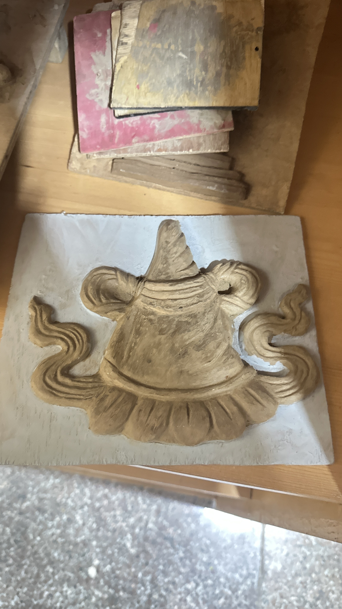

Interests
Web Design
I enjoy designing simple, clean, and user-friendly websites. I focus on creating modern layouts and intuitive navigation, and I love experimenting with new ideas to make websites both functional and visually appealing.
Sculpting
Sculpting is one of my favorite creative outlets. I enjoy working with my hands and shaping materials into meaningful forms, which helps me stay patient, focused, and imaginative.
